Memoria de la propuesta B · Seagram Building
Caso 025 · Ludwig Mies van der Rohe (con Philip Johnson) · 1958 · torre de oficinas
1. Idea
En un cañón de calles sin sol de invierno, una meseta de piedra levanta la plaza hasta la luz y una barra ligera de oficinas se alza al norte para recibirla de frente. La idea sintetiza el lugar (calles de 18 m que no dejan pasar el sol de diciembre, a 20° a las 14:00), el programa (46.000 m² de oficinas con una sede propia y plantas de alquiler), la composición (un plano horizontal a +12,19 m y una barra de 24 plantas) y la construcción (piedra y hormigón abajo, acero arriba).
2. Las 5 W
- Quién: la compañía y sus empleados (sede en las plantas 1 y 2), arrendatarios (barra), visitantes de la galería, el personal de cantina y de mantenimiento: unas 5.000 personas en total.
- Qué: sede y oficinas de alquiler, 70.200 m² construidos (66.200 m² útiles), sin aparcamiento ni pilotis.
- Dónde: solar de 91,44 × 60,96 m entre las calles 52 y 53, con Park Avenue al oeste-noroeste (retícula girada 29°); latitud 40°45' N.
- Por qué: la empresa busca imagen por la calidad; el solar pide un lugar con sol dentro de una ciudad que se lo quita.
- Cómo: una meseta de piedra que ancla y calla el ruido de Park Avenue, y una barra de acero que se retira de las calles para mirar al sol.
3. Gravedad y orden
Estereotómico: la base de piedra (PB, N1 y N2, hasta +12,19 m) con muros de 1,524 m en las tres calles y la medianera de hormigón; la losa de cimentación de 1,2 m, las zapatas de 3 × 3 m bajo cada pilar y las corridas de 3 m bajo los muros. Tectónico: la barra de acero de 24 plantas de 3,81 m, retícula de 9,144 × 10,16 m (9 × 4 ejes), con los pilares encajados en hormigón (0,80 m en T1-T8, 0,65 m en T9-T16, 0,50 m en T17-T24) y vuelo de sombra de 1,2 m al sur. Los pilares de la barra bajan por la misma retícula hasta la losa; los dos núcleos de hormigón (ascensores, escaleras y aseos) están en los extremos y bajan también hasta ella. Sistema proporcional: el módulo de 10 pies (3,048 m): plano a 4 módulos, vano de 3 módulos, barra de 24 × 10 módulos.
4. Luz
Latitud 40,76°. Sol del 21 de diciembre: 25,8° a las 12:00, 20° a las 14:00 (azimut 209°, en el plano de la sección generadora) y 13,4° a las 15:00. Sol del 21 de junio: 72,7° a las 12:00. Plaza elevada: luz horizontal-diagonal sólida y directa; los vecinos del sur (supuestos de 15 m) la tapan 8,7°, menos que los 13,4° mínimos (S01 y S02). Fachada sur de la barra: el sol de invierno penetra 2,3-6,0 m; el vuelo de 1,2 m da sombra completa a mediodía de junio (S03). Los puestos de trabajo quedan al norte del pasillo, a más de 10 m de la fachada sur; la franja soleada es zona de estar. Nave: luz difusa y artificial, la cueva que prepara la plaza. Fachadas este y oeste de la barra, cerradas por los núcleos.
5. Mecanismos y medida
- Estereotómico frente a tectónico: la base calla y ancla; la barra recibe el sol.
- El plano horizontal a +12,19 m: nada sobresale de él salvo la barra.
- Compresión frente a dilatación: pórtico de 24 m de ancho y 4,0 m de alto en un muro de 1,52 m → nave de 12,19 m con la gran escalera de tres tramos (23 peldaños de 17,7 cm, 5 m de ancho) → plaza abierta al cielo.
La entrada es monumental por su anchura (24 m, siete hojas dobles que abren hacia la calle dentro del grueso del muro) y por la masa de piedra de 8 m de alto que la corona; sus 4,0 m de altura mantienen la compresión previa a la nave.
6. Material y lugar
Piedra caliza (los edificios del entorno son de piedra, ladrillo y granito) en los muros de 1,524 m de la base; hormigón en núcleos, forjados y medianera; acero con mortero proyectado de 3 h y chapa en pilares y vigas de la barra; muro cortina metálico en las fachadas sur y norte de la barra; pavimento de piedra y estanque en la plaza.
7. Organización funcional (flujos)
- Sede y visitantes: entran por el pórtico de Park, a la nave (recepción, galería de la compañía, archivo de la sede) y a los ascensores del núcleo oeste, a 17 m de la puerta; suben a las oficinas de N1 y N2 por la gran escalera.
- Arrendatarios: entran por la calle 53 al vestíbulo de alquiler (recepción y control) y a los ascensores del núcleo este. Su acceso se refuerza con tres puertas dobles de 3,0 m (9,0 m de paso frente a los 5,4 m anteriores), el rótulo «Acceso de arrendatarios» y una dejada propia de 25 m en la calle 53 con paso peatonal a la acera; el vestíbulo, de 1.207 m², lleva mostradores de recepción, tres mesas de atención, dos rincones de espera con sofás y la maqueta de la torre en exposición.
- Servicio y carga: calle 52, bahía del camión, muelle de 4,0 m de gálibo, vestíbulo de servicio de 2,0 m, almacén de víveres y residuos; la cantina del personal abre a la nave y a la calle. El personal de cocina y cantina tiene junto a la cocina un aseo accesible, un aseo y un vestuario con taquillas y banco. El camión de reparto (caja de 8,2 × 2,5 m) entra por la calle 52 con un radio de giro de 12 m y se detiene ante el muelle.
- Plantas: N1 y N2 llevan pasillos en anillo y 26 oficinas de 85-170 m²; la planta tipo, una zona de estar al sol, dos salas de trabajo en grupo, un pasillo de 2,4 m y seis oficinas de 170 m². T1 es el vestíbulo alto con dos salas de consejo y la plaza de 3.173 m².
- Plaza: se cruza de sur a norte por el borde de Park (12 m libres) y por el vestíbulo alto (puertas alineadas de 2,4 m); ambos recorridos están dibujados en P03.
8. Cuadro de cumplimiento
| Exigido | Propuesto | Cumple |
|---|---|---|
| Documentos: situación y emplazamiento, plantas, secciones, alzados y espacios exteriores | U01; P01-P04 (todas a 1:200; la cubierta y la planta tipo con la planta baja bajo la barra comparten P04); S01-S03; alzados S04-S06; V01, L01, croquis y maquetas | Sí |
| Programa mínimo 46.000 m², oficinas de sede y de alquiler, sin pilotis | 70.200 m² construidos (66.200 m² útiles), barra apoyada en el suelo | Sí |
| FAR 12-15 (ZR 81-64) | 70.200 / 5.574 = 12,6 | Sí en C5-3; en la parte C5-2.5 (fracción no consta) el límite es 12 más la bonificación de plaza |
| Retranqueo de la barra sobre el muro en alineación: 3,05 m más tablas ZR 81-263 | 19,6 m de la calle 52, 10,9 m de la calle 53 (tabla A a 103,6 m: 10,82 m) y 17,5 m de Park (tabla C: 8,08 m) | Sí |
| Altura del muro en alineación: 27,4 m (calles) y 45,7 m (Park) | base de 12,19 m | Sí |
| Evacuación: recorrido máximo 91,4 m | 55 m en PB, 40 m en N1 y N2, 47 m en la planta tipo | Sí |
| Escalera: 0,0076 m/persona con la mayor inutilizada | planta tipo: 235 personas, 1,8 m exigidos y 4,5 m disponibles | Sí |
| Ascensor accesible desde 5 plantas | 4 ascensores de 1,9 × 2,0 m por núcleo | Sí |
| Círculo de giro accesible 1,525 m y transferencia de inodoro 1,525 m | aseos accesibles con círculo frente al inodoro y 1,9 m de transferencia | Sí |
| Barandilla de 1,067 m, contrahuella 0,102-0,178 m, huella 0,279 m | barandillas de 1,10 m; 22 peldaños de 17,3 cm y 0,28 m en T; 23 de 17,7 cm en la base | Sí |
| Pasillos: 1,118 m (público), 0,914 m (privado) | anillo de 1,8 y 2,4 m | Sí |
| Valores «no consta» (sumideros, superficie mínima de pieza, vehículos en curva, etc.) | no se inventan: se declaran como puntos abiertos | Pendiente del orquestador |
Nota (calle 53). A 103,6 m la tabla A da 10,82 m (35,5 ft); la barra se retira 10,89 m: el desplazamiento de 1,75 m hacia el sur sobre la posición inicial se hizo al subir de 14 a 24 plantas. Los vecinos del sur son supuestos (15 m).
9. Estructura y predimensionado
Luz de la barra de 10,16 × 9,144 m con forjado mixto de 0,36 m (≥ luz/35). Luces de 12,1, 12,3, 12,4 y 12,5 m (diagonales de los vanos y hueco del muelle): forjado de 0,36 m postesado (luz/34) y mixto en la barra. Carga por pilar en la base: 93 m² × 24 plantas × 7 kN/m² ≈ 15.600 kN; pilar de hormigón de 0,80 m (esbeltez 5) y nave de 0,70 m (esbeltez 17). R 180 con mortero proyectado de 3 h. Cimentación: losa de 1,2 m (z −1,56 a −0,36), zapatas de 3 × 3 m y corridas de 3 m (z −2,76 a −1,56), por debajo de la helada supuesta (1,2 m).
10. Acabados por elemento
| Elemento | Material / acabado |
|---|---|
| Muros de la base en las calles | piedra, 1,524 m |
| Medianera este y núcleos | hormigón, 0,25 m, chapa al exterior |
| Muro cortina de la barra | metal, 0,20 m |
| Forjados | hormigón, 0,36 m; pavimento de tarima, baldosa o losa según estancia |
| Plaza | pavimento de piedra, agua, vegetación |
| Cubierta | hormigón, 0,35 m; equipos de climatización y sumideros |
11. Instalaciones
Extracción mecánica a cubierta en aseos y locales interiores; veintidós equipos de climatización (unidades de 2,4 × 1,2 × 1,8 m con ventilador, en dos filas) sobre la cubierta, rotulados en P04, y cuatro sumideros; la cubierta plana tiene pendiente hacia los sumideros (el valor mínimo no consta en la normativa del lugar y no se inventa) y se accede a ella por los casetones de las dos escaleras sur, con puerta de 1,0 m a la cubierta; cuarto de instalaciones en cada núcleo y sala de instalaciones del edificio en PB.
12. Encuentros principales
- Muro de piedra de 1,524 m sobre la losa de cimentación de 1,2 m, que toca la cara inferior del forjado de planta baja.
- Forjado de 0,36 m sobre el muro de piedra (la cara del muro llega al borde del forjado).
- Muro cortina metálico entre núcleos, a ras del forjado, con vuelo de sombra de 0,30 m de canto y 1,2 m de ancho.
- Pilar de acero encajado en hormigón sobre pilar de hormigón de la base, en la misma retícula.
13. Accesibilidad y evacuación
Acceso sin escalones desde la parada de taxi de Park (5 × 22 m) por la acera y el pórtico, la nave y el vestíbulo trasero hasta los ascensores; el círculo de giro de 1,525 m se marca solo en los aseos accesibles. La fachada oeste de la barra tiene ventanas estrechas en escaleras, aseos y vestíbulo trasero, cada una con lamas de acero de 0,5 m de vuelo que la defienden del sol bajo de verano, y en la planta del vestíbulo alto la entrada principal desde la gran escalera (puerta doble de 3,0 m). Las puertas del pórtico abren hacia la calle. Cada planta tiene dos cajas de escalera por núcleo (cuatro en total), con tramos de 1,5 m y arranques a más de 1,0 m de los pilares.
Los inodoros de las cabinas de 0,97 m (AVISO «pegado a un muro») quedan a 0,40-0,48 m del eje de cada tabique; el aseo accesible, en cambio, deja 1,9 m a un lado para la transferencia.
14. Reinterpretación de la obra original
La obra original resolvió el mismo encargo con una torre exenta retirada y una plaza a la cota de la calle. Comparte con ella lo que impone el encargo: solar, programa, ausencia de pilotis, normativa. Se aparta en la idea (la plaza sube a +12,19 m), la sección, la estructura (base de piedra y barra de acero con muro cortina metálico) y el recorrido (pórtico bajo, nave, escalera, cielo). Coincidencias declaradas: ninguna.
15. Límite declarado
El soleamiento calculado y las vistas maqueta 1 y maqueta 2 sustituyen a las maquetas reales al sol. El modelo supone la cota 0 de Park en todo el solar (el desnivel real de 2,4 m se absorbería en las aceras), los vecinos del sur de 15 m la helada de 1,2 m y el edificio vecino del este (22 m, dibujado en proyección en U01); no se dispone de cartografía real del lugar, solo las medidas del encargo; la verificación IFC no se ha podido hacer (falta ifcopenshell).
Láminas de la propuesta
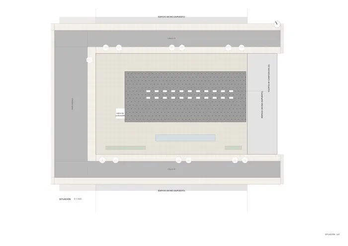
U01 · Situación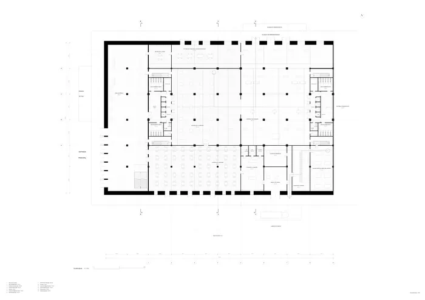
P01 · Planta baja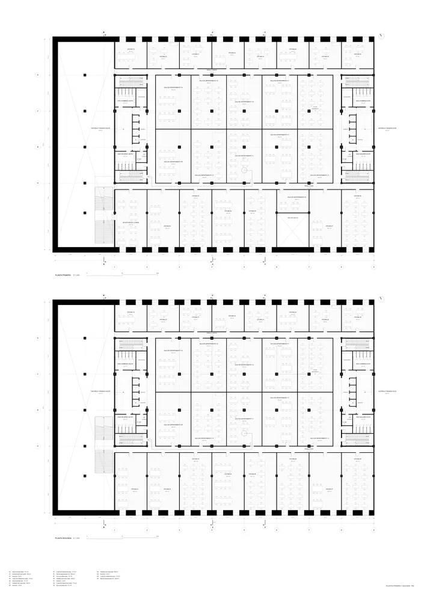
P02 · Plantas primera y segunda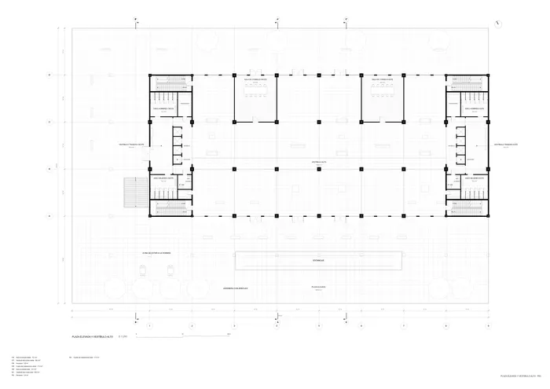
P03 · Plaza elevada y vestíbulo alto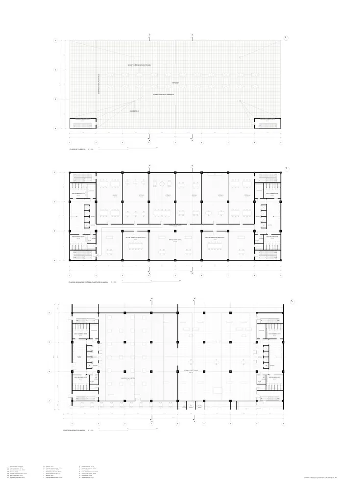
P04 · Barra cubierta planta tipo y planta baja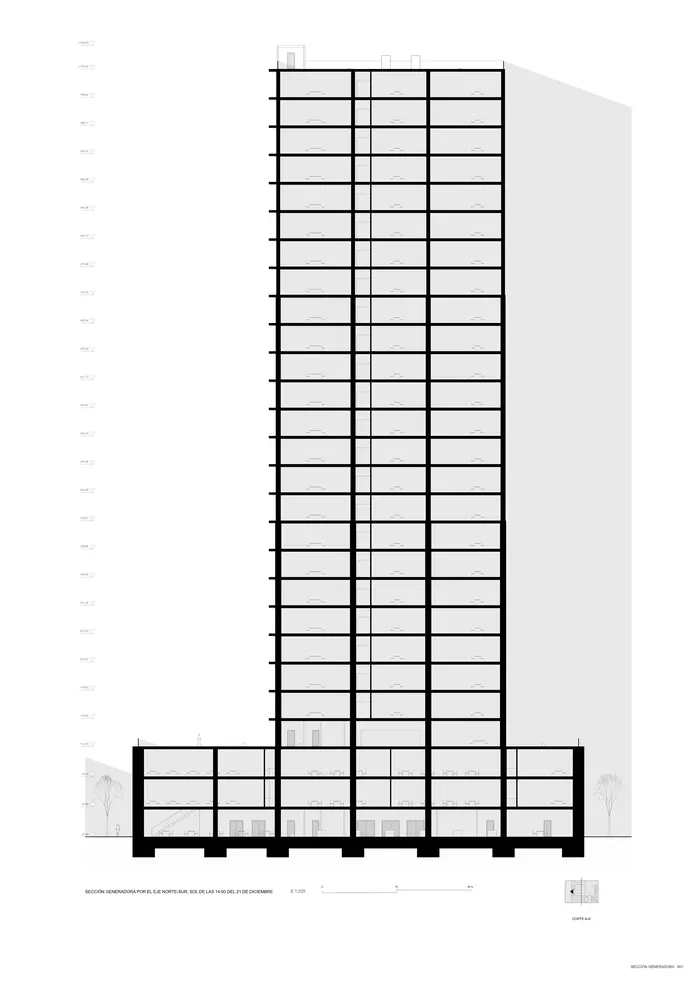
S01 · Sección generadora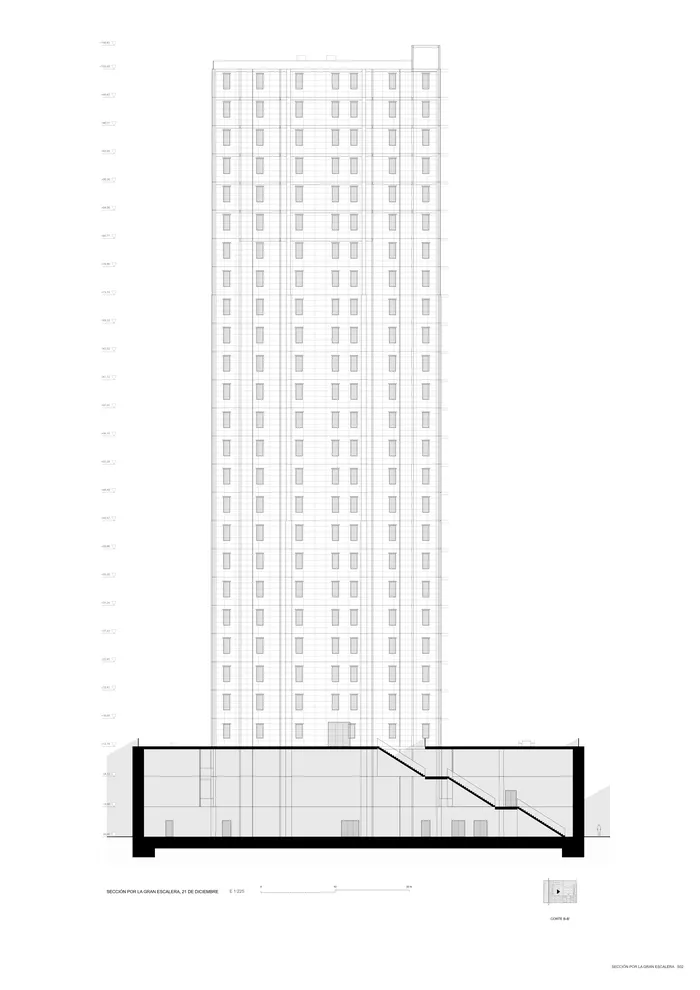
S02 · Sección por la gran escalera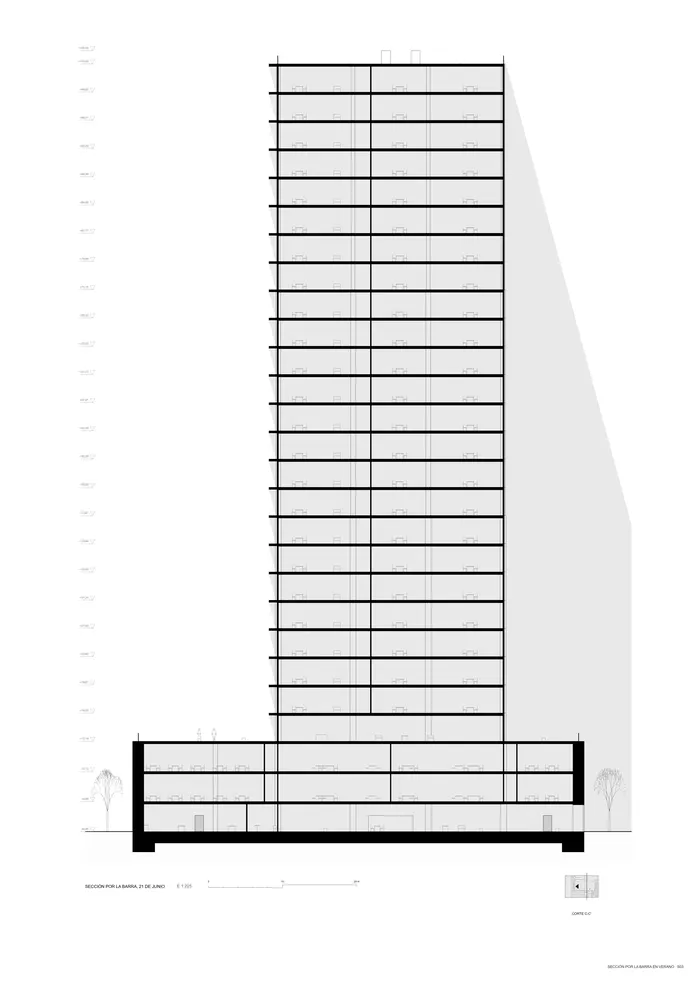
S03 · Sección por la barra en verano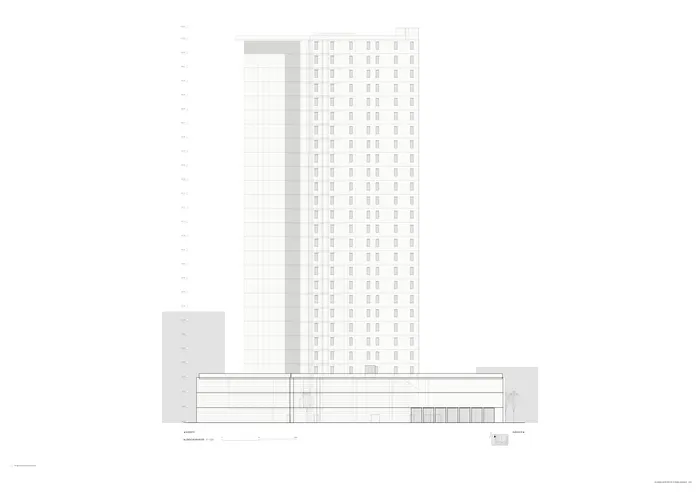
S04 · Alzado noroeste a park avenue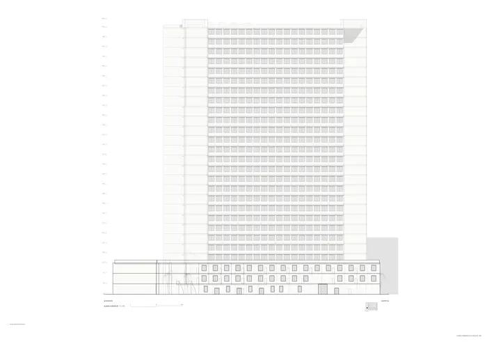
S05 · Alzado suroeste a la calle 52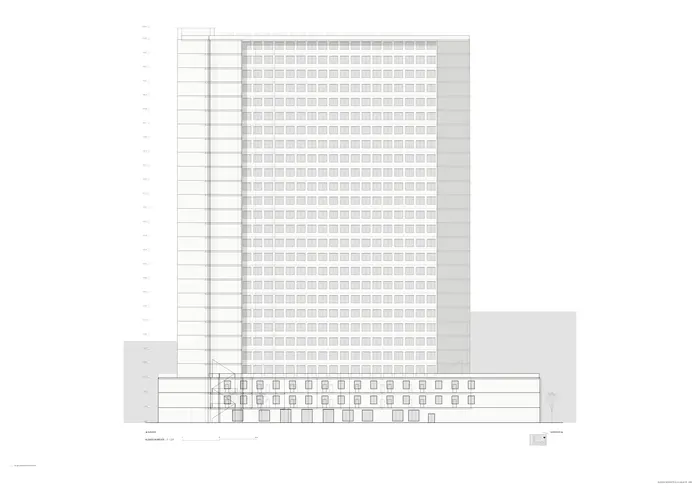
S06 · Alzado noreste a la calle 53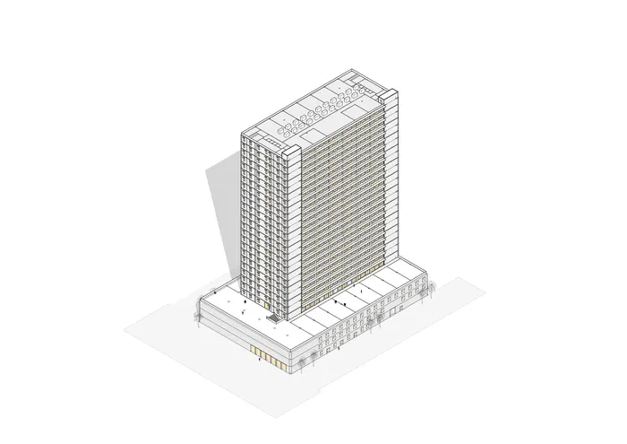
Vista 1 render Vista 2 render
Vista 2 render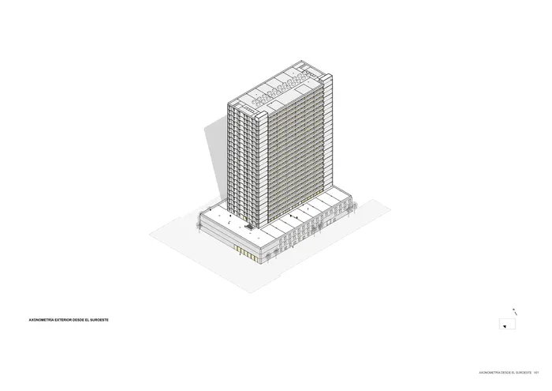
V01 · Axonometría desde el suroeste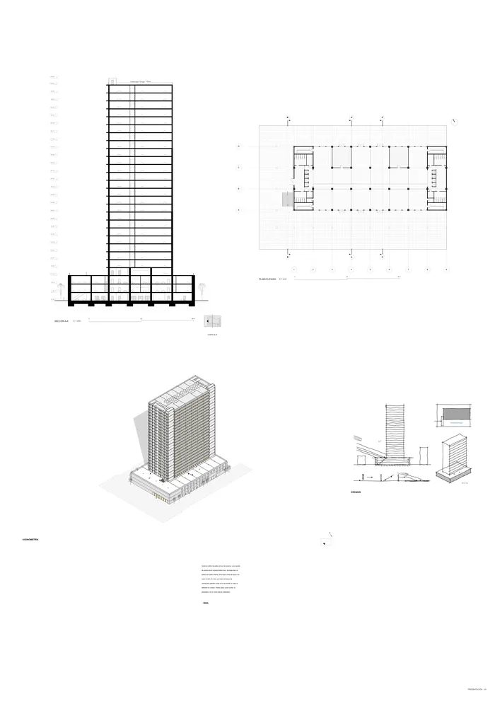
L01 presentaciónMemoria de la propuesta tal como la entregó el sistema. Se han omitido las notas internas del proceso (revisiones, control de reconocimiento y referencias a archivos de trabajo).